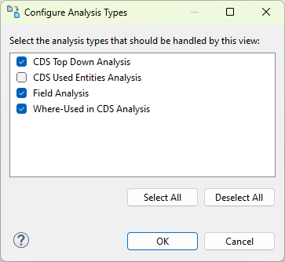

The CDS Analyzer allows you to analyze a CDS view in different ways. You can disable certain analysis types for a
view in the Configure Analysis Types dialog.
To configure the available analysis types, proceed as follows.
In the toolbar, either press the Switch Analysis Type action or choose
Configure Available Analysis Types from the dropdown menu of the same action
In the dialog, deselect the analysis types you don't want to be handled by the active CDS Analysis View

Analysis Types Configuration dialog
Select Ok
Impact on CDS Analysis View
History dropdown will not show analyses of deselected types. They will however be shown in the history dialog
If a new anlysis is to be shown, the next possible CDS Analysis view will be chosen to view that analysis in. If
no applicable view can be found for the type, a new one will be opened